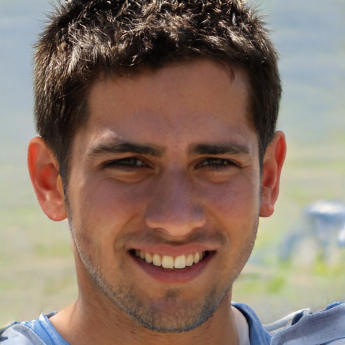
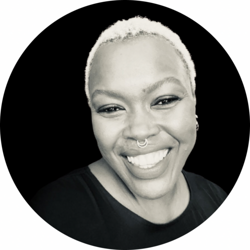
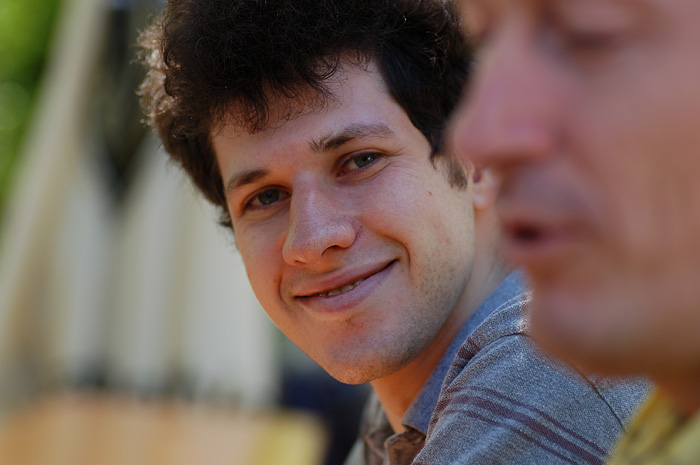
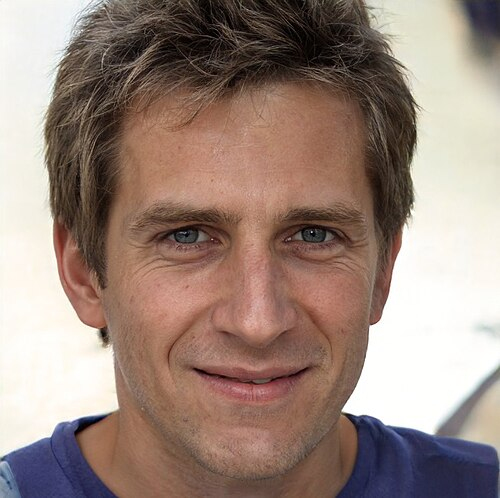
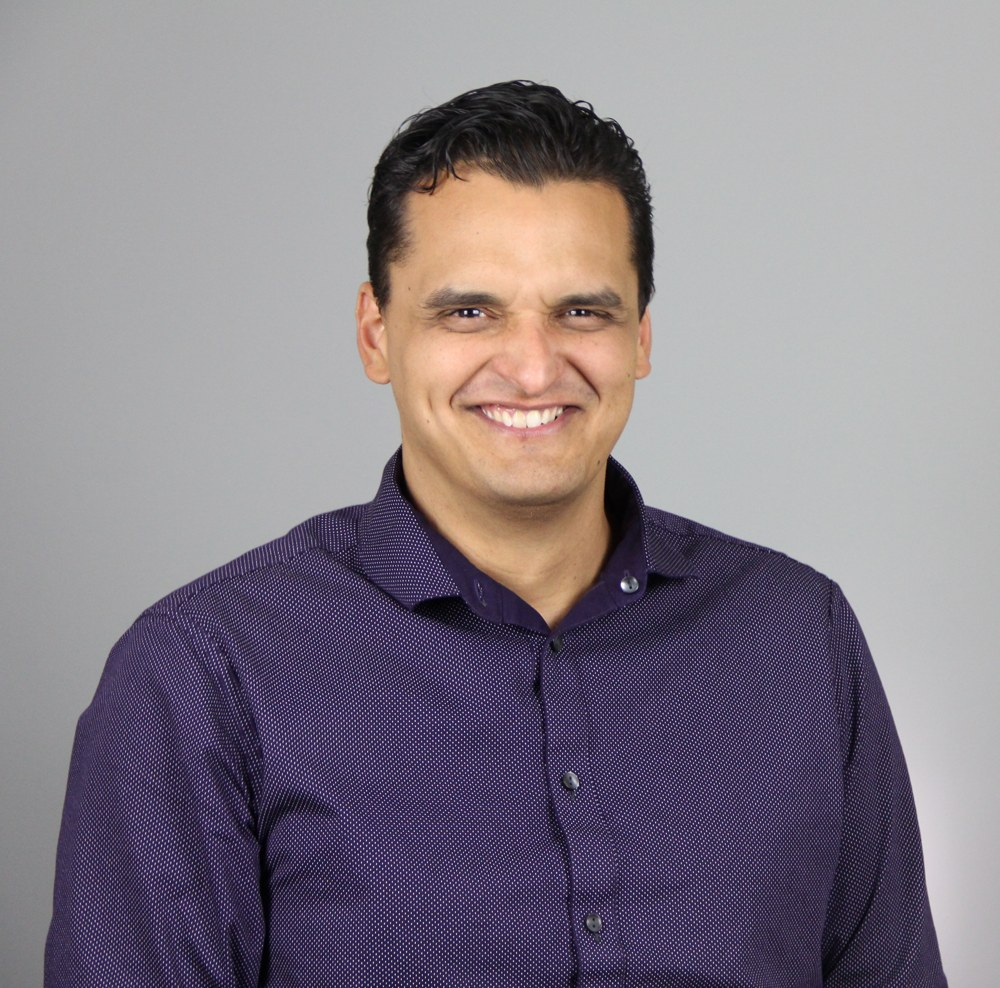

המשימה הראשונה שלנו מתחילה עכשיו
העולם משתנה.
אתם מוכנים?
AI Together · יוצרים ולומדים בינה מלאכותית ביחד
תלמידים + מורים = צוות אחד
כיתות ה׳–ו׳ · טבריה · מפגש 2 בתוכנית
המשימה הראשונה שלנו מתחילה עכשיו
AI Together · יוצרים ולומדים בינה מלאכותית ביחד
כיתות ה׳–ו׳ · טבריה · מפגש 2 בתוכנית
לא שיעור רגיל. משימת צוות.
האם תוכלו לזהות מה אמיתי ומה נוצר בבינה מלאכותית?
תבחרו משימה, תנסחו רעיונות והמורה יפעיל את ה-AI יחד איתכם.
כל בית ספר יצא עם רעיון ראשון ואמנת שימוש חכמה ובטוחה.
חוק המשחק: כל קבוצה חושבת ביחד. אין חובה להיות צודקים — יש חובה להיות סקרנים.
סקר בזק · אין תשובה לא נכונה
כל קבוצה מצביעה באצבעות: 1, 2, 3 או 4
משימה 01 / אתגר העיניים
שלושה סבבים · שתי תמונות · רק אחת של אדם אמיתי
סבב 1 / איזו תמונה מציגה אדם אמיתי?


כל קבוצה: מחליטים יחד ומצביעים A או B. מה גרם לכם לבחור?
סבב 2 / קשה יותר?


איזו מהן צילום של אדם אמיתי? מחליטים בצוות, ואז מנמקים.
סבב 3 / מבחן אחרון

מה יותר משכנע אתכם: פנים, רקע, תאורה או משהו אחר?
תגלית ראשונה / הבלש הטוב יודע גם להטיל ספק
התמונות במשחק כוללות דוגמאות ממודלי יצירה מוקדמים. מודלים חדשים עשויים ליצור תמונות משכנעות עוד יותר.
משימת חיפוש / איפה אנחנו פוגשים AI?
הסבר בלי מילים מסובכות
במקום לכתוב לו הוראה לכל מצב, אפשר לאמן מערכת על הרבה דוגמאות כדי שתלמד לזהות דפוסים.
הרבה מידע, טקסטים, תמונות וקשרים.
המערכת לומדת מה בדרך כלל מופיע יחד.
עונה, ממליצה, מזהה — או יוצרת תוכן חדש.
חשוב: זה לא מוח אנושי, וזה לא אומר שכל תשובה של המערכת נכונה.
אתגר זריז / נחשו את ההמשך
"כשמתחילים לרדת טיפות מהשמיים,
כדאי לקחת _____"
זו המחשה פשוטה בלבד: מודלי שפה מנבאים רצפים על בסיס דפוסים שלמדו, ולא רק משלימים משפטים קצרים.
רגע של בלשות / גם תשובה בטוחה יכולה להיות שגויה
"העיר טבריה נוסדה בשנת 1948 על שפת הכנרת."
משימה 02 / בני אדם מובילים, AI עוזר
ננסח ביחד משימה, המורה יפעיל את הכלי, וכולנו נבדוק את התוצאה.
משחק בחירה / אתם כותבים את ההנחיה
ההנחיה שבנינו יחד
תרגול משותף / המורה מפעיל, התלמידים מובילים
התלמידים בוחרים מה להוסיף להנחיה ואיך צריכה להיראות התוצאה.
שלב 2מדביק את ההנחיה בחשבון המורשה, מקרין את התגובה ולא מזין מידע אישי.
שלב 3מזהים מה טוב, מה חסר ומה כדאי לשאול בהמשך.
ההנחיה שהקבוצה ניסחה
אפשר לעבור בין המצגת ל-Gemini ואז לחזור לכאן. אין התחברות של תלמידים נדרשת.
חוקרים לא מאמינים לכל דבר. הם בודקים.
ה-AI הוא שותף לחשיבה — לא המחליט האחרון.
משימה 03 / יוצרים משהו משלנו
בכל קבוצה: צורך אחד → רעיון אחד → למי הוא עוזר
סדנת צוותים · כל בית ספר עובד יחד
מיקרופון פתוח / כל קבוצה ב-30–45 שניות
מה רציתם לפתור, ואיזה רעיון מצאתם?
משימה 04 / חוקי מעבדת ה-AI
התוצר הראשון שלנו / חותמים על אמנה משותפת
היום גילינו, התנסינו, פקפקנו וחשבנו על משהו חדש לבית הספר.
במפגש הבא: איך מדברים עם AI וגורמים לו לעזור לנו טוב יותר?
AI Together · טבריה · בהנחיית טל חקוקי · PractiAI